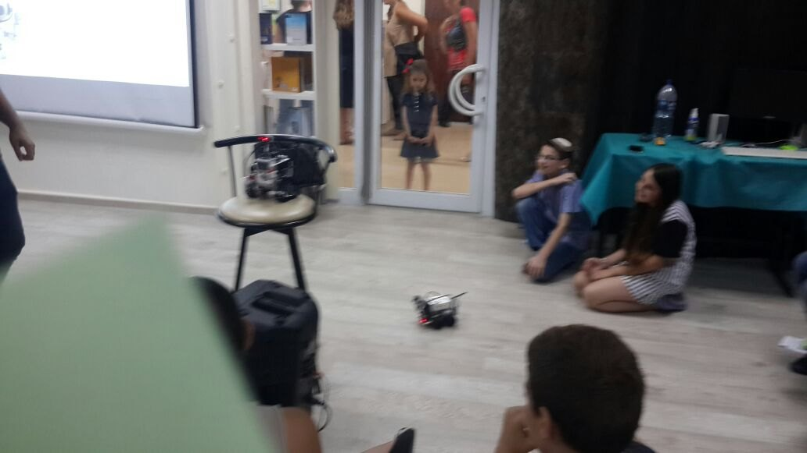
01
רובוטיקה
בנייה ותכנות עם מערכות לימוד מתקדמות, מנגנונים, חיישנים ופתרון אתגרים הנדסיים.
מטר רובוטיקס מחברת בין למידה מעשית, יצירתיות והנדסה – ברובוטיקה, תלת־ממד, מדעים, רחפנים ותכנות.
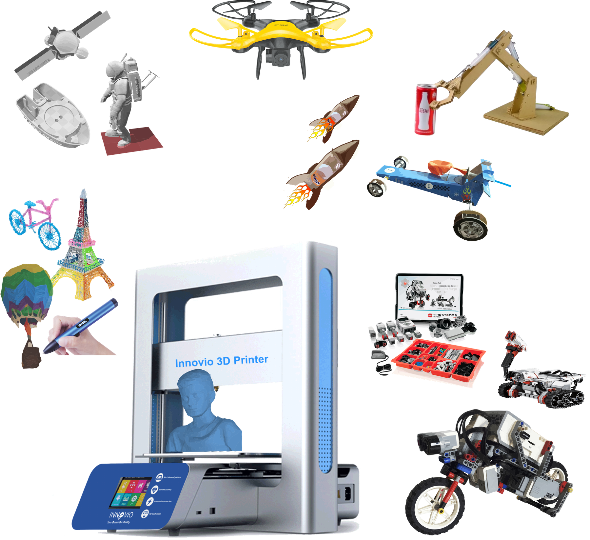
התוכניות משלבות בנייה, תכנון, ניסוי, פתרון בעיות ועבודת צוות. המטרה היא לא רק ללמוד איך טכנולוגיה עובדת – אלא לתת לילדים את הביטחון ליצור איתה.
האתר חודש על בסיס התוכן והחומרים של אתר מטר רובוטיקס המקורי.
מתוכניות ראשונות לילדים ועד פרויקטים מתקדמים לנוער.

בנייה ותכנות עם מערכות לימוד מתקדמות, מנגנונים, חיישנים ופתרון אתגרים הנדסיים.
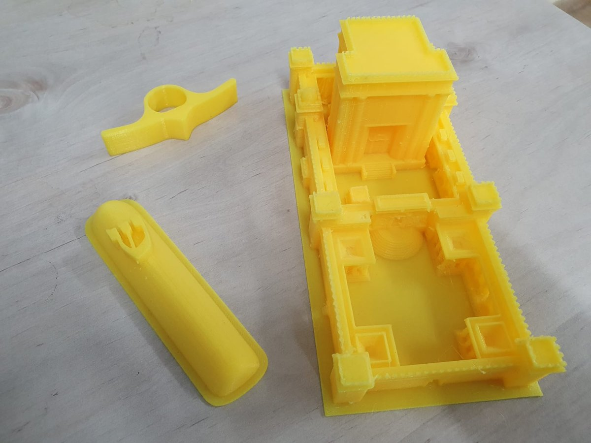
מתכנון דיגיטלי ועד אובייקט מודפס: מודלים, Tinkercad, חשיבה מרחבית ותכנון מוצר.
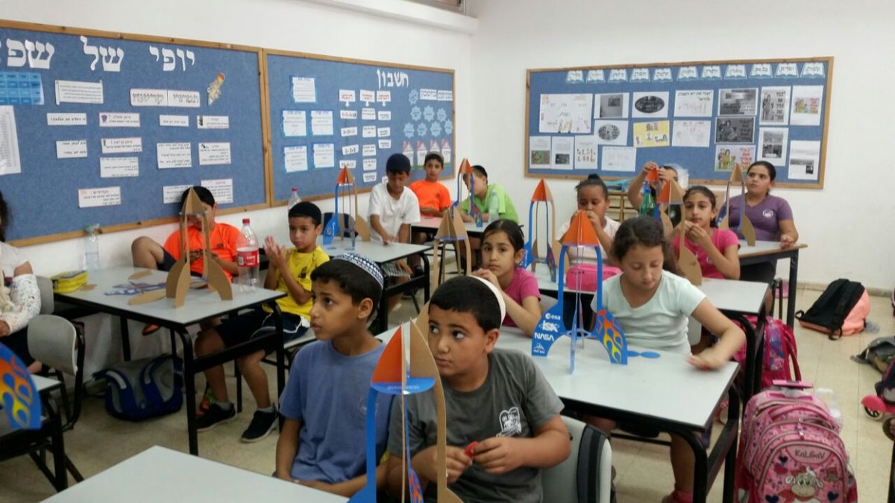
ניסויים ומודלים שממחישים עקרונות פיזיקליים בצורה מוחשית, סקרנית ומהנה.
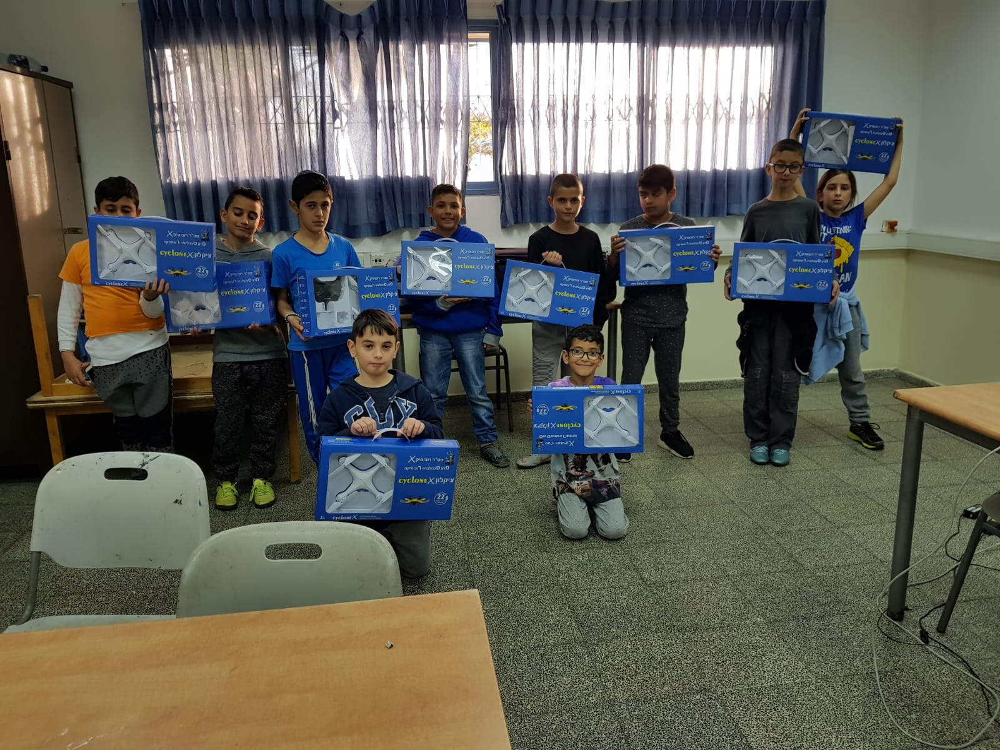
החוג נולד משאלה פשוטה: למה רחפן טס, ואילו חוקים פיזיקליים פועלים עליו? מכאן יוצאים למסע ניסויים: חוקי ניוטון דרך שיגור רקטות, עקרון ברנולי בבניית כדורים פורחים, משקל ופרופורציה בבניית רחפנים מחומרים פשוטים כמו קרטון — ולבסוף לומדים להטיס רחפנים בצורה בטוחה ומבוקרת.

הכנה ממוקדת לבחינות הבגרות בפיזיקה, עם חיזוק הבנה פיזיקלית, פתרון שאלות ותרגול שיטתי בנושאי מכניקה, חשמל ומגנטיות בהתאם לתוכנית הלימודים.
למערכת הלימוד אונלייןפיתוח אפליקציות וחשיבה מוצרית – מרעיון, דרך ממשק, ועד אבטיפוס עובד.
הנתונים מוצגים כנתוני פעילות היסטוריים מהאתר המקורי.
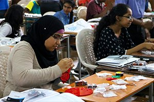
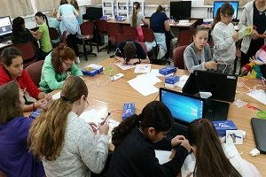
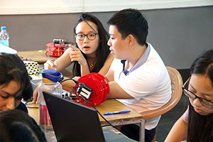
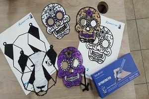
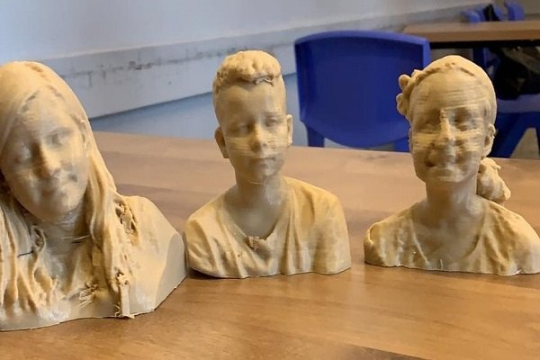
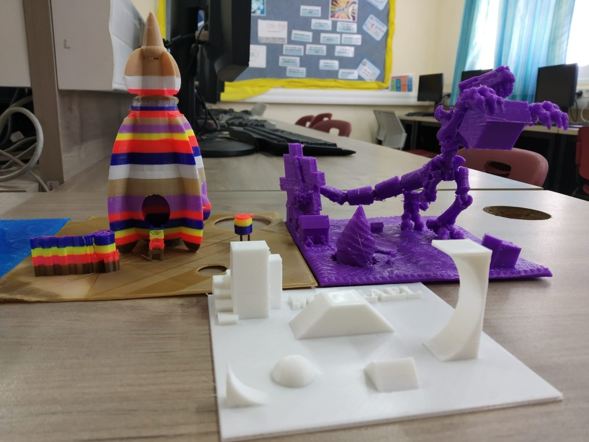
שלושה רגעים קצרים מתוך הפעילות של מטר רובוטיקס — למידה, ניסוי והפעלה אמיתית.
ילדים מתנסים, מפעילים ובודקים — הטכנולוגיה הופכת ממשהו שלומדים עליו למשהו שעושים.
רגע קצר שממחיש איך ניסוי פיזיקלי הופך ללמידה בלתי נשכחת.
פעילות מגוונת עם ניסויים והמחשות שמכניסות סקרנות, תנועה וחוויה לתוך הלמידה.
כן. המסלולים בנויים כך שניתן להתחיל מהיכרות ראשונית ולהתקדם בהדרגה לפרויקטים מורכבים יותר.
כן. באתר המקורי תוארה פעילות הן בבתי ספר והן במתנ״סים ובמסגרות חוגים וסדנאות.
רובוטיקה, תלת־ממד, פיסיקה ומדעים, רחפנים, Android והכנה לבגרות בפיזיקה, לצד פרויקטים ותחרויות.
האתר המקורי ציין פעילות גם בחברה הערבית ובחברה החרדית, באמצעות צוותים מתאימים.
ספרו לנו על המסגרת, גילאי המשתתפים והתחום שמעניין אתכם. נוכל לחזור עם כיוון מתאים.